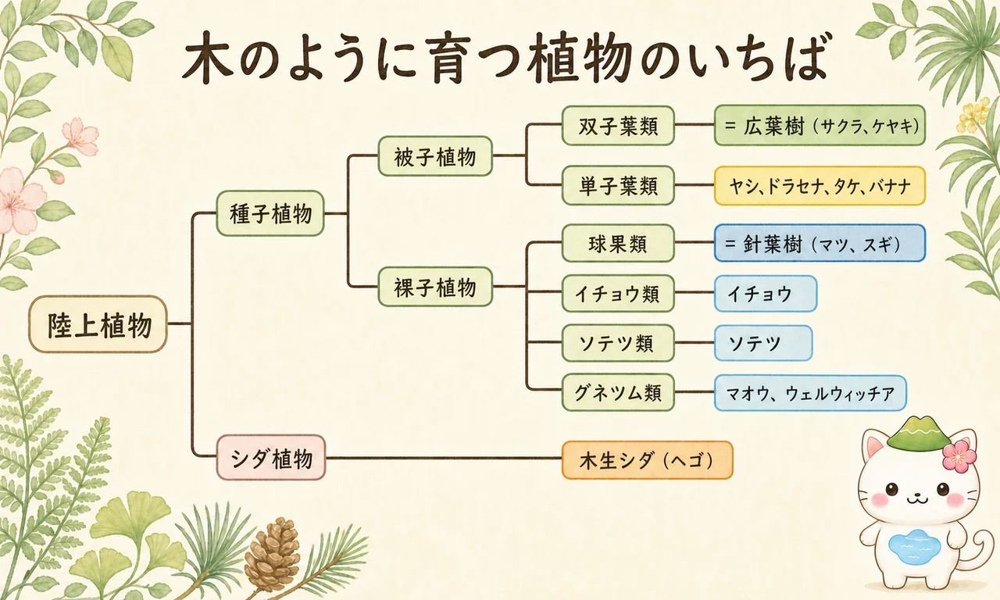
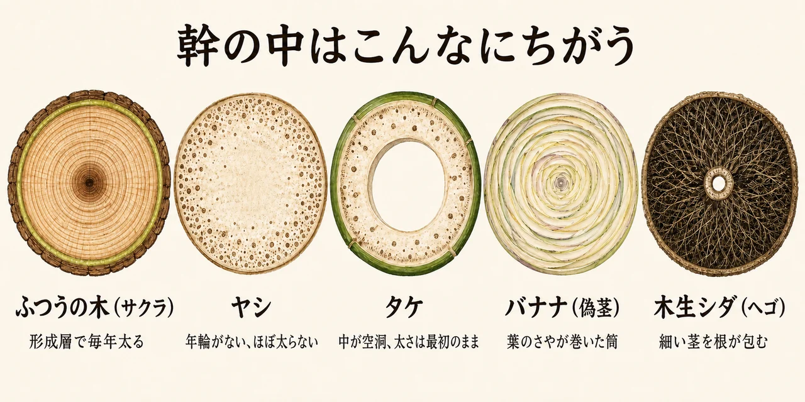
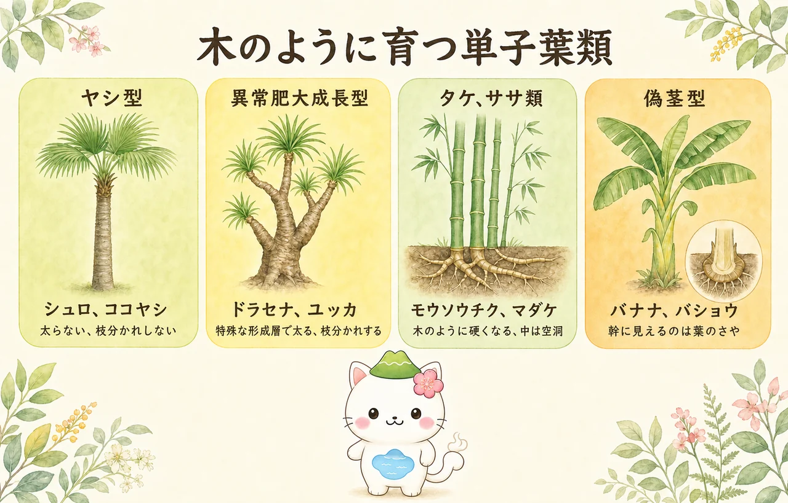
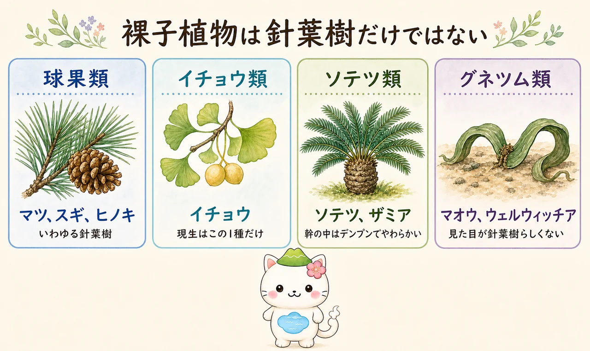

「針葉樹・広葉樹」とは何だったのか
まず、この2つの言葉の正体をはっきりさせておきます。じつは葉の形の話ではありません。
- 針葉樹＝ 裸子植物の木。タネがむき出し（子房に包まれない）。マツ・スギ・ヒノキなど。
- 広葉樹＝ 被子植物の木。タネが子房に包まれる。サクラ・ケヤキ・カシなど。
つまりこの二分法は、「種子植物のうち、木になるもの」を2つに割った分け方です。林業や木材の世界で長く使われてきた、実用的な区分でもあります。
ということは、ここから2種類のはみ出し者が出てきます。ひとつは被子植物なのに広葉樹の枠に入らないもの（＝単子葉類）。もうひとつはそもそも種子植物ですらないもの（＝シダ植物）。さらに裸子植物の中にも、マツやスギの仲間ではないグループがいます。

そもそも「木」とは何か
もうひとつ押さえておきたいのが、植物学でいう木本（もくほん）の定義です。一般には、幹に形成層があり、そこで細胞を作り続けて年々太くなり、その組織が何年も残るものを木本と呼びます。年輪ができるのは、この形成層のはたらきの記録です。
この定義を厳密にあてはめると、ヤシもタケもバナナもヘゴも「木本」ではありません。形成層による肥大成長をしないからです。それでも私たちが「木」と呼んでしまうのは、見た目が木そのものだから。この記事で扱うのは、まさに「木ではないのに木に見える植物」と、「木だけれど針葉樹でも広葉樹でもない植物」です。草と木の違いそのものは 植物学のはじめの一冊 でも触れています。

「タケは木？ 草？」という問いにすっきりした正解はないの。形成層がないから草の仲間（多年草）とする説が多いけれど、あんなに硬くて何年も立っているものを草と呼ぶのも変——ということで、木本に含める考え方もあるんだ。自然は人間の作った箱にきれいには収まらない。それがこの記事のいちばん面白いところだよ。
幹の中はこんなにちがう
ここが本題です。外から見ると同じ「幹」でも、輪切りにすると中身はまったく別物。この断面図ひとつで、この記事の内容はほぼ説明できます。

| 幹の中身 | 太くなる？ | 年輪 | |
|---|---|---|---|
| ふつうの木 | 形成層のまわりに木部が同心円状に積み重なる | 毎年太る | ある |
| ヤシ | 維管束が断面全体にバラバラに散らばる | ほとんど太らない | ない |
| タケ | 中心が空洞。まわりの薄い肉に維管束が散る | 太らない | ない |
| バナナ | 葉のさやが何枚も巻き重なった筒（偽茎） | 葉が増えれば太る | ない |
| 木生シダ | 細い茎のまわりを無数の根が分厚く包む | 根が増えれば太る | ない |
| ドラセナ・ユッカ | 単子葉類なのに特殊な形成層を持つ | 太る | ない |
① 木本性単子葉類（巨大な草の仲間）
イネやチューリップと同じ単子葉類でありながら、木のように大きくなるグループです。単子葉類は進化の途中で形成層を失ったと考えられており、原則として太る仕組みを持ちません。それでも高く育つために、4通りの解決策が生まれました。

ヤシ型（ヤシ科）
代表：シュロ、ココヤシ、ワシントンヤシ、カナリーヤシ
ヤシの幹は、成長点の下にある一次肥大分裂組織で早い段階に太さが決まります。そのあとはひたすら上へ伸びるだけ。細い若木がだんだん太くなっていく——という、私たちが木に対して持っているイメージが通用しません。地面近くでしっかり太らせてから、その太さのまま上へ伸びていきます。
そのため、ヤシは幹の下のほうを傷つけると取り返しがつきません。ふつうの木なら形成層が働いて傷をふさぎますが、ヤシにはその仕組みがないためです。同じ理由で、幹を切り詰める剪定もできません。成長点はてっぺんにひとつだけなので、そこを切れば枯れます。
- 幹の太さは早い段階でほぼ決まる。
- 年輪ができない。
- ふつうは枝分かれしない（成長点が1つ）。
- 古い葉の付け根が幹に残り、あの独特の模様になる。
- まったく太らないわけではなく、細胞がふくらむことでわずかに太る種類もある（びまん性二次成長）。ただし年輪はできません。
- 枝分かれするヤシも存在します。アフリカのドウムヤシ（Hyphaene）は二又に分かれます。
異常肥大成長型（キジカクシ科など）
代表：ドラセナ（幸福の木）、コルジリネ、ユッカ、アロエ・ディコトマ
このグループが面白いのは、単子葉類でありながら、形成層に相当する組織を自前で作り出した点です。ふつうの木の形成層とは由来も働き方も違うため、「異常肥大成長」と呼ばれます。
この特殊な分裂組織は、内側に向かって維管束と柔組織を、外側に向かって柔組織を作ります。年輪のような同心円ではなく、断面には維管束が散らばったまま、全体がじわじわ太っていく——という独特の姿になります。
太れるようになった結果、このグループは枝分かれもできます。観葉植物のドラセナが、切ったところから何本も枝を出すのはこのためです。南アフリカのアロエ・ディコトマ（現在の学名は Aloidendron dichotomum、ススキノキ科）は、二又に分かれ続けて高さ7〜9mの巨木になります。
タケ・ササ類（イネ科）
代表：モウソウチク、マダケ、ハチク、クマザサ
イネの仲間でありながら、茎（稈・かん）が極度に木質化して硬くなります。ただし形成層はないので、タケノコとして地上に出た時点の太さが最終的な太さ。あとは伸びるだけで、決して太くなりません。
伸びる速さは植物界でも突出しており、モウソウチクは1日1m以上伸びることがあります。これは細胞分裂ではなく、各節にあらかじめ用意された細胞が一斉に伸びるためです。地上に出たあとは、数年かけてリグニンが蓄積し、硬さを増していきます。中が空洞なのは、少ない材料で高く強く立つための構造——鉄パイプと同じ理屈です。
地下では地下茎がつながっており、竹林一面が1つの株ということも珍しくありません。庭に植えると手に負えなくなるのはこのためで、植えるなら地下に遮根シートを入れるのが鉄則です。
偽茎型（バショウ科など）
代表：バナナ、バショウ、ゴクラクチョウカ（ストレリチア）
幹に見える部分が、そもそも幹ではありません。葉の根元（葉鞘・ようしょう）が何枚も筒状に巻き重なったもので、これを偽茎（ぎけい）と呼びます。ネギやタマネギの構造を、そのまま巨大にしたものだと思ってください。
本当の茎は地下にある短い塊茎です。新しい葉は、偽茎の内側の中心を通って上へ突き上がってきます。バナナが実をつけたあと株が枯れるのは、その偽茎が一生を終えるから。地下の茎から出る子株（吸芽）が次の世代になります。
偽茎には木質部がないため、強風でいとも簡単に倒れます。台風のあとにバナナがなぎ倒されているのは、この構造ゆえです。
② 木生シダ（巨大化するシダ植物）
代表：ヘゴ、ヒカゲヘゴ、マルハチ、ディクソニア
恐竜が現れるよりも前から地球にいる、シダ植物のグループです。種子ではなく胞子で増えます。花も咲かず、実もつきません。
幹に見える部分は、垂直に立ち上がった茎（地下茎が立ったもの）で、木材にあたる組織はありません。ではなぜあの高さを支えられるのか。答えは2つあります。ひとつは細胞壁にリグニンをためて硬くすること。もうひとつが独特で、茎のまわりを無数の細い根（不定根）がびっしり覆い、たわしのような分厚い層をつくって補強するのです。
つまり木生シダの「幹」は、細い芯を、根の束が外骨格のように包んだ構造。園芸で使う「ヘゴ材」「ヘゴ板」があの繊維質なのは、正体が根の集まりだからです。
- 胞子でふえる。花も種子もない。
- 幹の中心に硬い木材の芯はない。
- 成長点はてっぺんに1つ。そこを傷めると枯れる。
- 幹の表面の根から水を吸うため、幹にも水をかけるのが管理のコツ。
- ヘゴ属の一部はワシントン条約の対象。入手は正規の流通品で。
日本ではマルハチ（小笠原諸島の固有種）やヒカゲヘゴ（南西諸島）が自生しています。マルハチという名前は、落ちた葉の跡が幹に「⑧を逆さにした形」で残ることに由来します。
ヘゴを育てるとき、土だけに水をやっていると弱ってしまうことがあるの。幹をおおっている根が水を吸っているから、幹そのものを湿らせてあげるのが大事。霧吹きで幹にたっぷりかけてあげてね。乾燥に弱いのは、こういう体のつくりだからなんだ。
③ 針葉樹以外の裸子植物
「裸子植物＝針葉樹」というイメージが強いのですが、裸子植物は4つのグループに分かれます。マツやスギの仲間（球果類）は、そのうちのひとつにすぎません。

ソテツ類
代表：ソテツ、ザミア、オニソテツ
シダのような大きな羽状の葉を持ちますが、胞子ではなく種子を作る立派な裸子植物です。成長は極端に遅く、1年に数cmしか伸びないことも珍しくありません。庭のソテツが何十年も同じ姿に見えるのはそのためです。
幹の中は柔組織（デンプンを含むやわらかい組織）が多く、木材としてはスカスカです。専門的にはマノキシリック材と呼ばれ、硬い木材を作る球果類とは対照的。飢饉のときにソテツのデンプンが食用にされた記録があるのは、この性質によります。
ただしソテツ全体に「サイカシン」という有毒成分が含まれます。かつての食用は、水にさらすなど厳重な毒抜きを前提としたもので、素人が真似できるものではありません。庭にあるソテツの種子や幹を口にしないでください。
イチョウ類
代表：イチョウ（ただ1種）
平べったい扇形の葉を持つため広葉樹と間違われますが、イチョウは被子植物ではなく裸子植物です。ギンナンの外側のやわらかい部分は果肉ではなく外種皮。子房に包まれていないので、果実ではありません。
そして特筆すべきは、イチョウ科イチョウ属イチョウ——現生種はこの1種だけだということ。かつては世界中に多くの仲間がいましたが、すべて絶滅しました。生きた化石と呼ばれるゆえんです。この点だけは詳しく見る価値があるので、次の章で扱います。
グネツム類
代表：マオウ（麻黄）、ウェルウィッチア、グネツム
裸子植物のなかで、いちばん見た目が「らしくない」グループです。マオウは葉が退化してトクサのような細い緑の枝だけになっており、漢方薬の原料として知られます。グネツムは熱帯のつる植物で、広い葉を持ち、まるで被子植物のようです。
極めつけがウェルウィッチア（奇想天外）。ナミブ砂漠に生え、生涯にたった2枚の葉しか出しません。その2枚が伸び続け、風で裂けてよじれ、何百年も生き続けます。「木」とは呼びにくい姿ですが、れっきとした裸子植物です。
「イチョウは針葉樹か」問題
ここで、はっきりさせておきたいことがあります。「イチョウは針葉樹ですか？」という問いに、ひとつの正解はありません。どの立場で言うかで答えが変わるからです。
- この世界では「針葉樹＝裸子植物、広葉樹＝被子植物」と二分します。
- イチョウは裸子植物なので、針葉樹に分類されます。
- 木材としても、道管を持たない点で針葉樹材と同じ性質です。
- 都道府県の林業研究機関なども、この整理で説明しています。
- 狭い意味の針葉樹は球果類（マツ門・Pinophyta）を指します。
- イチョウはイチョウ門（Ginkgophyta）という独立した系統です。
- マツやスギとは、かなり古い時代に分かれた別グループです。
- この立場では「針葉樹でも広葉樹でもない裸子植物」となります。
どちらも間違いではありません。「木材の話をしているのか、系統の話をしているのか」で使い分ければよいのです。同じことはソテツ類にも当てはまり、林業の二分法ではソテツも針葉樹の側に入ります。
言葉が現実に追いついていない——というより、目的が違う2つの分類が同じ言葉を使っている。ここを知っておくと、「イチョウは針葉樹」と書いてある本と「イチョウは針葉樹ではない」と書いてある本の両方に出会っても、混乱せずに済みます。
ちなみにイチョウの葉に見える「葉脈」は、二又に分かれるだけで網目にならないの。広葉樹の葉が網の目のような葉脈を持つのとは、はっきり違うつくり。今度イチョウの葉を拾ったら、光にすかしてよく見てみて。広葉樹に見えて広葉樹じゃない証拠が、葉っぱ1枚に残っているよ。
まとめ
「針葉樹と広葉樹」は、種子植物の木を2つに割った、実用的だけれど網羅的ではない分け方でした。そこからはみ出す植物たちを整理すると、こうなります。
- 木本性単子葉類：形成層を持たない単子葉類が、それぞれのやり方で高くなった。ヤシは太らずに伸び、ドラセナは特殊な形成層を発明し、タケは硬い中空の筒になり、バナナは葉を巻いて筒にした。
- 木生シダ：種子すら持たない古いグループが、細い茎を根の束で包むという方法で立ち上がった。
- 針葉樹以外の裸子植物：球果類のほかに、イチョウ類・ソテツ類・グネツム類がいる。イチョウは現生1種の生きた化石。
共通しているのは、どれも「木になる」という目標に、まったく違う道すじでたどり着いたということです。幹の断面を5つ並べたあの図（図2）は、その多様さの記録にほかなりません。ヤシもタケもバナナも、私たちが思う「木」ではない。それでも空へ向かって立っている——そう思って眺めると、公園の景色が少し変わって見えるはずです。
植物の体のつくりをもっと広く知りたい方は 植物学のはじめの一冊 を、身近な庭木の見分け方は 似てる木の見分け方 と プラント アニマルズ をどうぞ。常緑樹と落葉樹という別の切り口は 常緑樹と落葉樹の違い にあります。